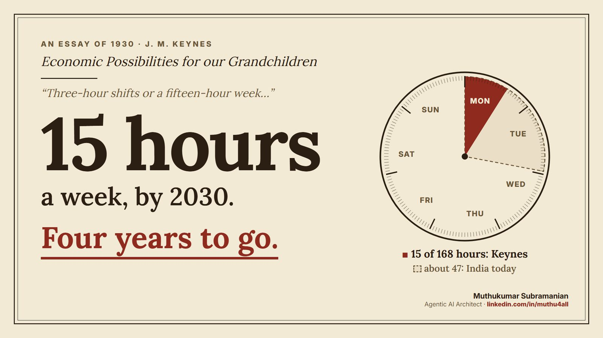
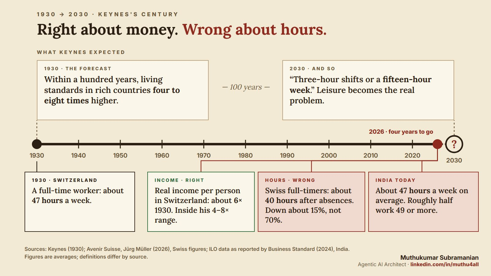
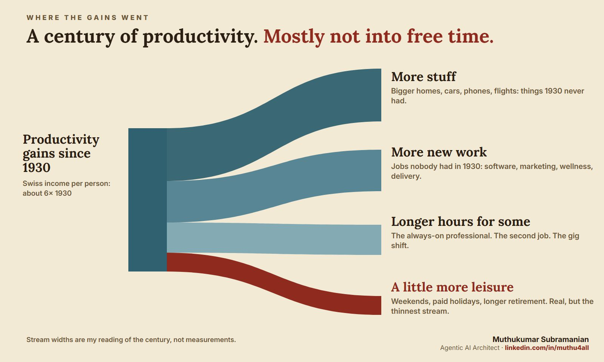
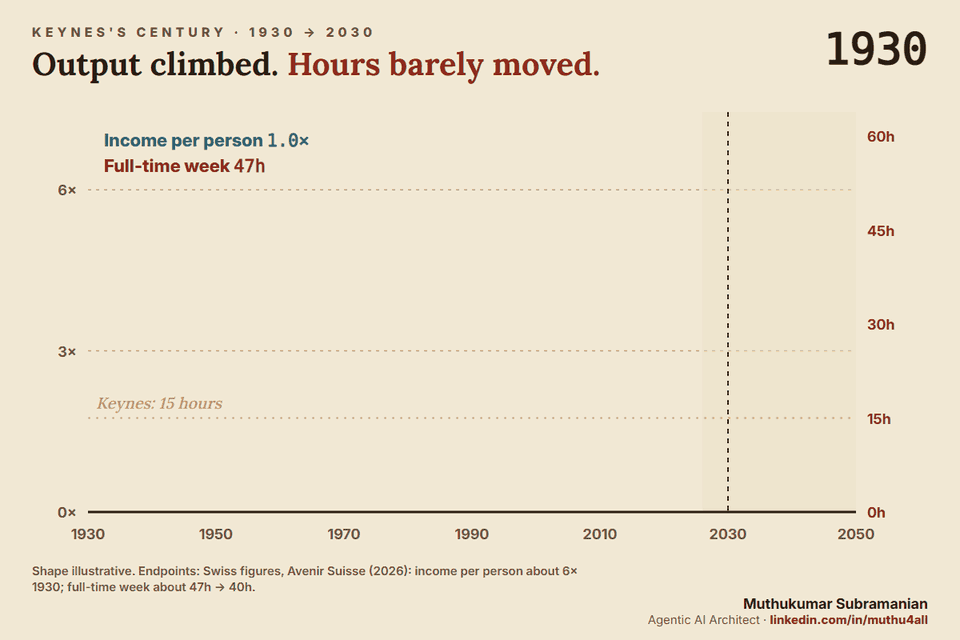

Keynes Promised Us a 15-Hour Week by 2030. Four Years to Go.
By Muthukumar Subramanian · Agentic AI Architect

Sunday, 9:40 PM, somewhere in Chennai. The dosa plates are cleared, the kids are finally asleep, and the laptop is open on the dining table again. "Just clearing a few mails before Monday."
You know this scene. Maybe it's your table.
In October 1930, the British economist John Maynard Keynes published an essay about the people sitting at that table. He called it Economic Possibilities for our Grandchildren. His bet: within a hundred years, technology and compound growth would make rich countries so productive that the "economic problem" would be close to solved. And then people would work a lot less.
"Three-hour shifts or a fifteen-hour week," he wrote.
The deadline he gave was about 2030. That's four years from now.
This is the first piece in a short series I'm calling After Work: what happens to people when machines do more of the work. I'm starting with the sceptic's view, because the last time someone made this promise, it didn't come true.
He was right about the money
Keynes said living standards in "progressive countries" a hundred years on would be "between four and eight times as high". That part held up remarkably well.
One example: a 2026 Avenir Suisse analysis puts Switzerland's real income per person at roughly six times its 1930 level. Right inside his range. Across rich countries, Our World in Data's long-run series shows the average worker now does about half the yearly hours of a worker in the late 1800s.
So productivity delivered. More than a century of machines, electricity, computers and the internet did what he said they would.

He was wrong about the hours
Here's the part that stings. The same Swiss analysis says a full-time worker did about 47 hours a week in 1930, and about 40 today once holidays and absences are counted. That's a drop of roughly 15%. Keynes's fifteen hours would have needed nearer 70%.
In India, the argument went the other way. ILO data, as widely reported in 2024, put India's average at about 47 hours a week, with roughly half of workers doing 49 hours or more. Between 2023 and 2025, well-known business leaders publicly floated 70-hour and even 90-hour weeks. Nobody floated 15.
A fair note: Keynes didn't present the 15-hour week as a pure forecast. In the essay, it's partly his suggestion for spreading the little work that's left, because he thought people would still need some work to feel content. But the direction was clear. Less work. Much less.
It didn't happen. So where did all that productivity go?
Where the gains went
As far as I can tell, into four streams.
- More stuff. Bigger homes, cars, phones, flights, food from anywhere. Things that didn't exist in 1930, and quickly felt like needs.
- More new work. Software, marketing, design, wellness, delivery. Whole industries Keynes couldn't have named.
- Longer hours for some. The always-on professional. The second job. The gig shift that never quite ends.
- A little more leisure. Weekends, paid holidays, longer retirement. Real, and worth a lot. But the thinnest stream.

Keynes half-saw this coming. He split our needs into two kinds: absolute ones, which we feel whatever our neighbours have, and relative ones, which we feel only if they lift us above our neighbours. The second kind, he warned, may be insatiable. A century later, the relative needs won. We didn't buy time with our gains. We bought more, and then worked to keep up.
A century of machines didn't buy us time. It bought us more of everything else.
Now the robots
Fast forward to this year. In September, Elon Musk told a G20 innovation meeting, "Ten years from now, I would say there are well over a billion humanoid robots," and argued that such a fleet could out-produce the whole human workforce.
I treat that as a scenario, not a forecast. Musk has called himself "pathologically optimistic" on timelines, and most people I read expect broad robot deployment to take longer. But let's take the scenario seriously for a minute. Suppose the machines really do arrive at that scale.
Will it be different this time?
Two reasons it might be:
→ The gains could be so large and so fast that even our appetite for more can't absorb them.
→ If machines can also do most of the new work, the second stream, "more new work", dries up. That's the stream that saved us last time.
Three reasons it might not:
→ Relative needs haven't gone anywhere. There's always a bigger flat in a better area.
→ Gains go to whoever owns the machines. If that's a few companies, most people still need a job to get a share. I wrote about who pays the tax in that world in When Machines Do the Work, Who Pays the Tax? (26 Oct). This piece doesn't repeat it.
→ We like work more than we admit. Which brings me to Keynes's real warning.

The problem after the problem
The part of the essay I keep coming back to isn't the forecast. It's the worry.
Keynes thought that once the economic problem was solved, people would face their "permanent problem": "how to use his freedom from pressing economic cares, how to occupy the leisure". And he wasn't sure we'd cope. He called it "a fearful problem for the ordinary person, with no special talents, to occupy himself".
Ask anyone at a Chennai wedding what they do, and they'll tell you their job. Not their hobby, not their family. The job. For millions of us, work isn't only income. It's identity, status, routine, and the reason to get dressed.
So "what fills the day?" isn't a small question. It might be the biggest one.
The hard parts
I don't have neat answers here, and I'm suspicious of anyone who does.
→ Identity. If your job is who you are, a shorter week can feel like a demotion, not a gift.
→ Meaning and mental health. Retirement already shows us that free time without purpose can hurt.
→ Education. What do we tell a Class 10 student, if the job isn't the goal any more?
→ Who gets the free time. Last century, leisure went unevenly. A robot century could be worse: unwanted free time for some, 70-hour weeks for others.
→ The numbers. Hours data is messy. Full-time and part-time, formal and informal, per worker and per person all tell different stories. I've used averages, and averages hide a lot.
Keynes wasn't wrong that machines could set us free. He was wrong about what we'd do with the freedom.
Tag the friend who's always "just clearing a few mails" on Sunday night.
Your turn 👇
By 2036, will your working week be shorter than today, or about the same? Shorter or same.